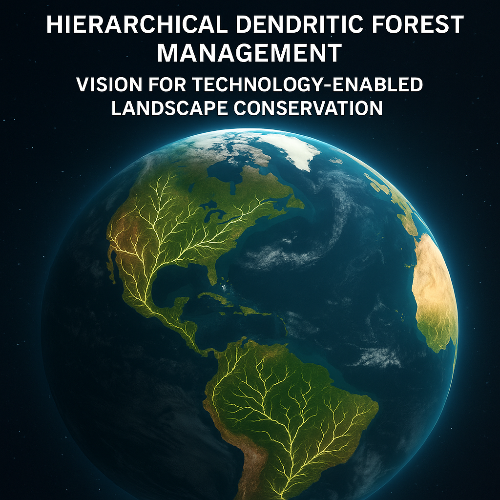

Two starting networks. Distinct functions. One landscape plan.
Rooted in placeConnected through timeTested against evidence
01 / FOUNDATION
Work with what is already there.
A branching pattern is a starting design idea. Its value depends on where it goes, what it connects, and how the forest is managed over time.
01
Waterways establish the riparian structure.
Map streams, wetlands, and their surrounding forest. Use that structure to identify retention and restoration opportunities, then connect into upland habitat.
Water flow and wildlife movement are different processes. Each needs its own assessment.
02
Roads establish the access context.
Begin with existing access points and road segments. Evaluate their usefulness, nearby forest, barriers, and crossings before proposing additional access.
The road surface and a forest strip beside it are separate features.
03
Retained forest connects the landscape.
Link riparian forest with existing habitat and old forest. Arrange management units around those connections, with continuity as a long-term objective.
A mapped corridor is a design proposal. Ecological function must be measured.
02 / SYSTEM MAP
From the ground to a defensible plan.
The proposed workflow preserves the identity of roads, waterways, and habitat throughout the design. Every new connection should have a traceable purpose.
01
Read the landscape
Bring together the planning boundary, roads, waterways, terrain, forest stands, existing habitat, and management objectives.
Mapped baseline
02
Establish the starting networks
Identify riparian retention, suitable access origins, existing forest connections, and places where roads and water intersect.
Retained structure
03
Design the connections
Compare feasible forest branches, restoration links, and access choices using terrain, habitat needs, and spatial constraints.
Design alternatives
04
Arrange management over time
Delineate working units and treatment schedules around retained forest, then revisit access and connectivity where they conflict.
Spatial & temporal plan
05
Measure, compare, and revise
Check actual retained area, habitat connections, crossings, access, and disturbance against the existing landscape and fair alternatives.
The future planner should explain which road access point, riparian segment, habitat objective, or constraint led to each design choice.
03 / RESEARCH
A framework with questions to answer.
DFM brings several research questions into the same landscape. Benefits remain hypotheses until tested with appropriate comparisons and field evidence.

HDFM explores computational methods within the wider DFM research program.
01 / HABITAT
Can retained connections support movement and persistence?
Evaluate habitat quality, barriers, species-specific movement, and continuity across treatment periods.
02 / WATER
How does the plan change runoff and sediment risk?
Study crossings, drainage, riparian condition, and road-to-stream connections alongside layout geometry.
03 / WORKING FORESTS
What are the access and management tradeoffs?
Compare retained area, disturbance, treatment targets, access costs, and long-term care under equivalent constraints.
04 / RESILIENCE
Where do additional connections improve resilience?
Test branching and looped alternatives under disturbance and changing habitat conditions.
04 / OPEN SOFTWARE
Built in the open. Clear about its stage.
The software is an early research implementation. The integrated road-and-waterway workflow above is the target architecture.
Research prototype
HDFM Framework
Python tools for patch-based network construction, topology comparisons, synthetic experiments, and visualization. Additional modules explore widths, genetics, robustness, and temporal optimization.
Reference code, synthetic examples, tests, and project documentation.
Needs correction
Known issues affect area units, optimization results, and ecological interpretation.
Next milestone
The website now saves road and waterway projects and compares geometric scenarios. The next research milestone is a reproducible, field-reviewed landscape assessment.
An additional local raster prototype explores branching paths and corridor widths. Neither implementation currently provides a validated operational forest plan.
05 / DEVELOPMENT PATH
One landscape. A complete chain of evidence.
The next milestone is a reproducible site study that starts with real roads and waterways and ends with mapped alternatives, explicit assumptions, and independently checked results.
Correct the core calculations and output handling.
Represent roads, waterways, crossings, and forest as distinct features.
Compare plans with equivalent targets and constraints.
Use field observations to test ecological performance.
The USDA resource provides background on riparian functions; it is not an endorsement or validation of DFM. Diagram is conceptual. Project status reviewed September 2026.